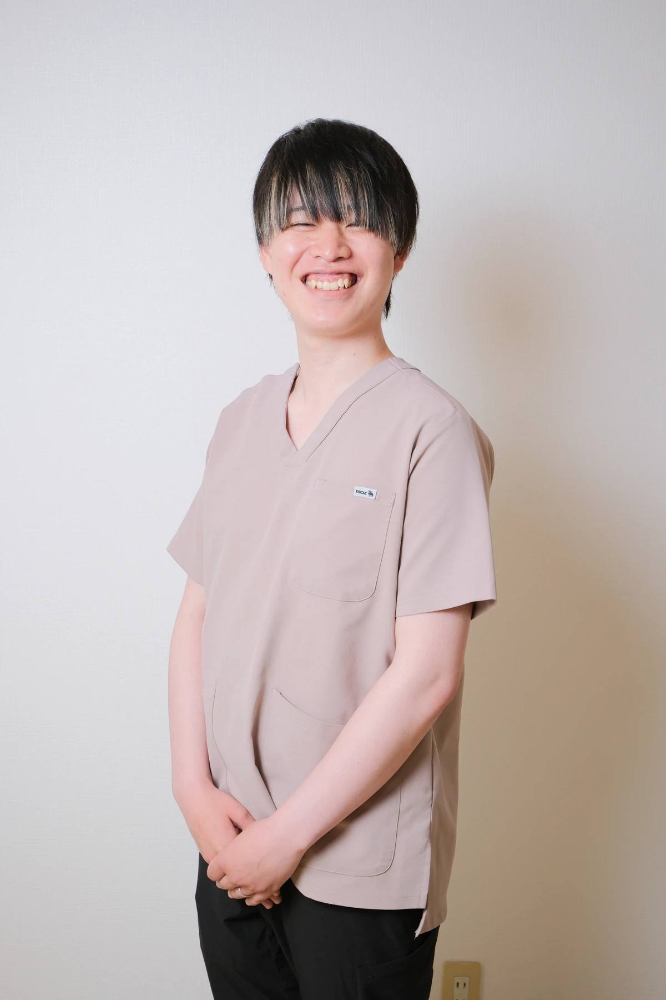
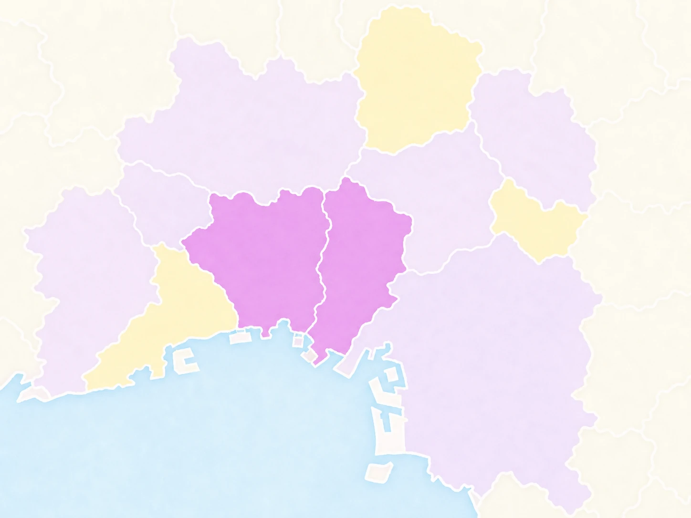

01
腹膜透析に強いケア
腹膜透析・在宅透析
腹膜透析や在宅透析を続ける方の療養生活を、専門知識を持ったスタッフが安全にサポートします。
詳しく見る →その人らしい暮らしを、自宅で支えます。
ひとつの笑顔が、次の笑顔へ。
尼崎市を拠点に、腹膜透析・小児/育児・精神科ケアの専門知識と
家族のような温かな対話で、在宅での安心をお届けします。
SERVICE
あなたに合った看護を、ご自宅へお届けします
医療的なケアからリハビリ、心のサポートまで。
看護師・理学療法士などの専門スタッフがご自宅に伺い、安心の療養生活をサポートします。
WHY SMILE
安心して任せられる、4つの強み
24時間365日対応
緊急時もご連絡いただける体制で、夜間・休日も安心です
3つの専門領域
腹膜透析・小児/育児・精神科の専門知識を持つスタッフが在籍
尼崎市に密着
地域の医療機関と連携し、顔の見える関係を大切にしています
家族のような温かさ
対話を大切に、ご利用者様とご家族に寄り添うケアを提供します
STAFF
笑顔でお伺いします
代表あいさつ
病気や障害があっても、「住み慣れた家で自分らしく暮らしたい」——そんなお一人おひとりの想いに寄り添い、ご利用者様とご家族様の「やりたい」という気持ちの実現に向けて一緒に歩むパートナーでありたいと考えています。
about us を見る一緒に働くメンバー



FLOW
初めての方もご安心ください
お電話またはフォームからお気軽にご連絡ください。ご家族やケアマネジャーからのご相談も可能です。
訪問看護指示書の発行を主治医に依頼します。手続きのサポートもいたしますのでご安心ください。
ご自宅に伺い、お身体の状態やご希望を丁寧にお聞きし、最適なケアプランを作成します。
計画に沿って専門スタッフが訪問を開始。体調の変化に合わせて柔軟にケア内容を見直します。
FAQ
気になることは、お気軽にお尋ねください
はい、ご利用いただけます。ご年齢やご病気の種類、要介護認定の有無によって適用される保険が異なります。面談の際に最適な方法をご案内いたします。
ご利用者様の状態やケアプランにより異なりますが、週1〜3回、1回30分〜90分程度の訪問が一般的です。主治医の指示やご希望に合わせて柔軟に調整いたします。
訪問エリア内（尼崎市および近隣地域）であれば、基本的にいただいておりません。エリア外の場合の対応につきましては、お問い合わせ時にお尋ねください。
国家資格を持つ看護師、准看護師、理学療法士、作業療法士が訪問いたします。育児中のスタッフや女性スタッフも多数活躍しており、明るくアットホームな雰囲気が特徴です。
まずはお気軽にご相談ください。尼崎市全域・伊丹市全域を中心に、池田市・豊中市・箕面市・吹田市・大阪市・西宮市一部にも対応しております。エリア外の場合も、可能な限り対応方法を一緒に考えます。
対応しています。ご本人とご家族の想いを大切にしながら、主治医や関係機関と連携し、ご自宅で安心して過ごせるよう支援します。
24時間体制でご相談いただけます。緊急時の連絡方法や対応の流れは、ご利用開始時に分かりやすくご案内します。
腹膜透析をはじめ、難病、医療依存度の高い方、看取りなど幅広く対応しています。ご病状や必要な医療処置に応じて、事前に丁寧に確認します。
SERVICE AREA
尼崎市全域・伊丹市全域を中心に、池田市・豊中市・箕面市・吹田市・大阪市・西宮市一部にも対応しております。まずはお気軽にご相談ください。

尼崎市・伊丹市
全域対応
尼崎市・伊丹市
全域対応
SERVICE AREA
尼崎市全域・伊丹市全域を中心に、池田市・豊中市・箕面市・吹田市・大阪市・西宮市一部にも対応しております。まずはお気軽にご相談ください。
DIARY
FROM INSTAGRAM
ケアの工夫やスタッフの働き方、利用者さんとの温かな時間を公式Instagramで発信しています。
RECRUIT
あなたの「やりたい看護」を、ここで。
看護師、准看護師、理学療法士、作業療法士さんを募集しています！
育児中の方、若い方、女性が多数活躍している、アットホームな職場です。
3つの専門分野
透析ケア・小児サポート・精神科看護の3領域で、あなたの得意を活かしながらスキルアップできる環境です。
充実の研修制度
未経験の方でも安心してスタートできるよう、先輩スタッフが丁寧にサポート。段階的なステップアップ制度で確実に成長できます。
働きやすさ◎
育児中のスタッフも多数活躍中。時短勤務や曜日固定など、ライフステージに合わせた柔軟な働き方が可能です。
3つの専門分野
透析ケア・小児サポート・精神科看護の3領域で、あなたの得意を活かしながらスキルアップできる環境です。
充実の研修制度
未経験の方でも安心してスタートできるよう、先輩スタッフが丁寧にサポート。段階的なステップアップ制度で確実に成長できます。
働きやすさ◎
育児中のスタッフも多数活躍中。時短勤務や曜日固定など、ライフステージに合わせた柔軟な働き方が可能です。